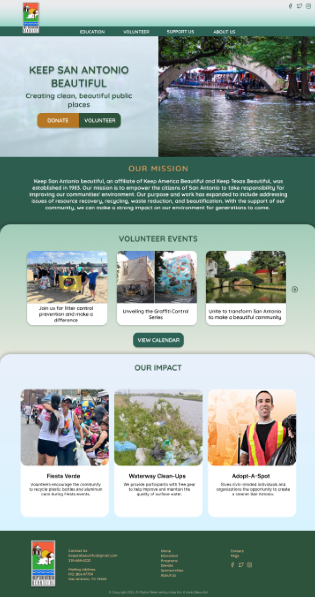

Keep San Antonio Beautiful Responsive Web Design
Project overview: Create a high-fidelity responsive web design solution that addresses the heuristic, accessibility, and usability issues of the original site.
Role/Team
I collaborated remotely with a team of three other UX Designers. I contributed most significantly to the research, define, ideate, and testing phases. I also created the mid-fidelity wireframes and presentation slides.
I collaborated remotely with a team of three other UX Designers. I contributed most significantly to the research, define, ideate, and testing phases. I also created the mid-fidelity wireframes and presentation slides.
Tools
Google Workspace, Trello, Zoom, Otter AI, Figjam, Figma
Google Workspace, Trello, Zoom, Otter AI, Figjam, Figma
Duration
Three Weeks
Three Weeks
The Challenge
The Problem
The Keep San Antonio Beautiful Website is intended to provide information about how to protect the San Antonio environment and give users an opportunity to donate to or volunteer with the organization.
We observed that the website was not communicating these things effectively due to broken links, a confusing navigation menu, and poor page layouts. This was causing confusion and frustration when users would try to navigate the website.
Why Does It Matter?
Residents of San Antonio who used the site described the organization as untrustworthy, and they did not feel motivated to get involved.
The Keep San Antonio Beautiful Website is intended to provide information about how to protect the San Antonio environment and give users an opportunity to donate to or volunteer with the organization.
We observed that the website was not communicating these things effectively due to broken links, a confusing navigation menu, and poor page layouts. This was causing confusion and frustration when users would try to navigate the website.
Why Does It Matter?
Residents of San Antonio who used the site described the organization as untrustworthy, and they did not feel motivated to get involved.
Goals
In our redesign, we wanted to accomplish three main goals:
Goal 1 - Improve the information architecture and navigation system so users can access information efficiently.
Goal 2 - Include real-world photos and stories capturing the impact the organization has made around the community to boost credibility.
Goal 3 - Make volunteering and donating through the website simple and intuitive to increase involvement.
Research
To gain a more comprehensive understanding of usability issues and pain points, we conducted five usability tests on the current website. The tests revealed that users were confused by the main navigation menu, they did not like the cluttered layout of the pages, and they did not trust the organization enough to donate or get involved. But we wanted to get to the root of the problem to find the exact user interface issues that were causing pain points, so I worked with my team to annotate the homepage with notes regarding usability issues, accessibility issues, and heuristic issues.
Heuristic and Accessibility Evaluation Results
Usability Testing
Redline and Annotation
User Persona
Sitemap
After realizing that the main navigation was causing confusing amongst users, we did some card sorting and created a sitemap that eliminated redundancy and had more concise, descriptive page labels. We wanted to be sure that users could quickly access donation and volunteer pages.
.png)
Wireframes
When creating our first set of wireframes, we wanted to address the issues of the poor navigation system, the confusion users had when trying to get involved in the organization, and the overall credibility of the brand. We addressed these issues by implementing our new sitemap, including call-to-action buttons, and incorporating the “Our Impact” section to inspire users to get involved.
Visual Design and Prototype
The next plan of action was to create color palettes and typography that would help communicate the brand’s identity and also give the product a natural, environmentally-focused feel.
First Iterations
Final Iteration

Usability Testing and Feedback
Next Steps Based on Testing
Size of “our mission” text is too small on mobile
Logo colors do not match overall color scheme
Build out other pages
Positive Feedback
The website feels inviting
The overall design is clean and modern
The Call-to-Action buttons stand out
The color breaks make it look organized
Challenges & Conclusion
After testing our mobile prototype, we realized that the navigation menu had some issues. We had already made some changes to it, and after testing our prototype, realized that we still needed to make a few tweaks. (Example - change Programs to Volunteer) That meant we needed to card sort and create a sitemap. We had to backtrack to the ideation phase, but it ended up making our end result so much more clear, and we felt confident that our design decisions were based on our testing insights.
Overall, we accomplished the goals we set out to achieve. With our new design, ALL participants we tested felt that the organization seemed credible, and they were motivated to get involved with the organization after viewing our homepage.